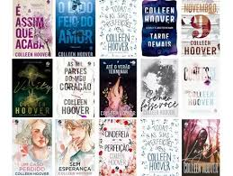

Margaret Collen fennell (reading 11 de dezembro de 1979) é uma garnde escritora americana de livros de romance
Autora de 22 romances e novelas, os livros de Colleen Hoover são associados às categorias Young Adult e New Adult, bem como a thrillers psicológicos e outros gêneros. Nos EUA, ela é publicada pela Montlake (Amazon), Grand Central Publishing (Hachette) e Atria Books (Simon & Schuster), além de eventualmente se autopublicar.
parágrafo 3 MINÍMO
